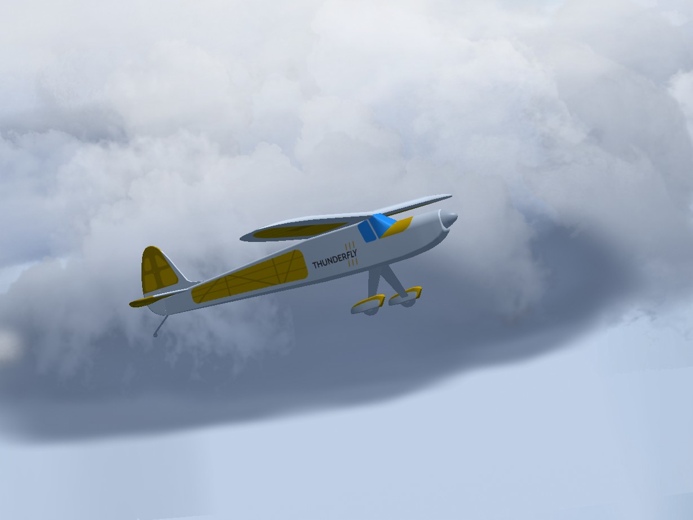

FlightGear Vehicles
This topic lists/displays the vehicles supported by the PX4 FlightGear simulation, and the make commands required to run them (the commands are run from terminal in the PX4-Autopilot directory). 지원 형식은 항공기, 오토자이로, 탐사선입니다(이 형식의 몇가지 지정 프레임이 있습니다).
For the full list of build targets run
make px4_sitl list_vmd_make_targets(filter out those that start withflightgear_).
The FlightGear page shows how to install and use FlightGear in more detail. (this page is a summary of vehicle-specific features).
Standard Plane
FlightGear has models for many planes. The most suitable one for UAV development is currently the Rascal RC plane (which also exists in multiple variants).

The variants differ mainly by the FDM model. All variants have a common feature selection table that can be activated by pressing the = key on the computer keyboard.
There is a pop-up table that could be used for advanced features activation.

The most relevant option is:
- Smoke - generates a smoke trail to enhance the visibility of aircraft in the air (smoke and particles option needs to be activated in FG View > rendering options > Particles checkbox).
- Trajectory markers - displays orthogonal markers along the trajectory of flight.
Trajectory markers show the absolute flight path in the world coordinates, and the smoke trail shows the relative path in the air mass.
Rascal 110 YASim
The primary variant of the Rascal model has a combustion piston-engine model. This results in a non-zero idle power causing a rotation of propeller on idle engine RPM.
The launch command is:
make px4_sitl_nolockstep flightgear_rascal
Rascal 110 Electric YASim
A Rascal vehicle with an electric engine.
make px4_sitl_nolockstep flightgear_rascal-electric
This variant needs the latest FlightGear code (sources at least from 26 April 2020). Otherwise, the FlightGear crashes because of an unexpected definition of electric engine.
Rascal 110 JSBsim
Rascal JSBsim variant.
This variant does not have a direct make option but can be manually selected in the rascal.json configuration file (part of PX4-FlightGear-Bridge). Simply change Rascal110-YASim to Rascal110-JSBSim in this file.
Autogyro
The only UAV autogyro model supported by FlightGear is TF-G1 Autogyro.
make px4_sitl_nolockstep flightgear_tf-g1

Ackerman vehicle (UGV/Rover)
TF-R1 지상 지원 탐사선
이 탐사선은 견인 고리를 장착하였기 때문에 아마도 다른 기체의 공중 견인에 활용할 지도 모르겠습니다.
make px4_sitl_nolockstep flightgear_tf-r1

Quadrotor
There is only an incomplete multirotor model. This is not yet usable (it is numerically unstable and needs an additional work).
Adding a New Vehicle
A new vehicle model needs to be included as a git submodule into PX4-FlightGear-Bridge/models/ directory. 이 디렉터리에는 제어 채널 정의 JSON 파일이 들어있습니다.
{
"FgModel":"Rascal110-YASim",
"Url":"https://github.com/ThunderFly-aerospace/FlightGear-Rascal/archive/master.zip",
"Controls": [
["5","/controls/flight/aileron","-1"],
["7","/controls/flight/elevator","-1"],
["2","/controls/flight/rudder","1"],
["4","/controls/engines/engine/throttle","1"]
]
}
The file content meaning is as follows:
FgModel- a precise case sensitive name of the FlightGear model corresponding to "XXXX-set.xml" in the model directory (where XXXX is the model name).Urlis optional and it is not currently used. It is intended for future use to auto-download the models from webControls- the most important part of the process of adding a vehicle. This section contains the mapping between the PX4 mixer file and FlightGear property tree.- The first number in a list selects a PX4 mixer output.
- Path string is a FlightGear variable location in the property tree.
- The last number in a list is a multiplier, allowing inversion or scaling of mixer input.
After preparing all these files a new vehicle need to be included in the PX4 make system.
The PX4 configuration is in /platforms/posix/cmake/sitl_target.cmake. The new vehicle's json name should be added to the list.